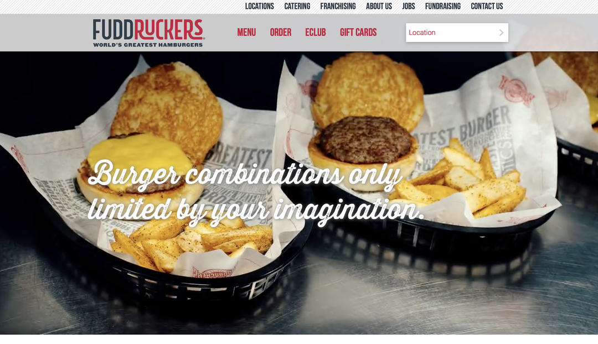
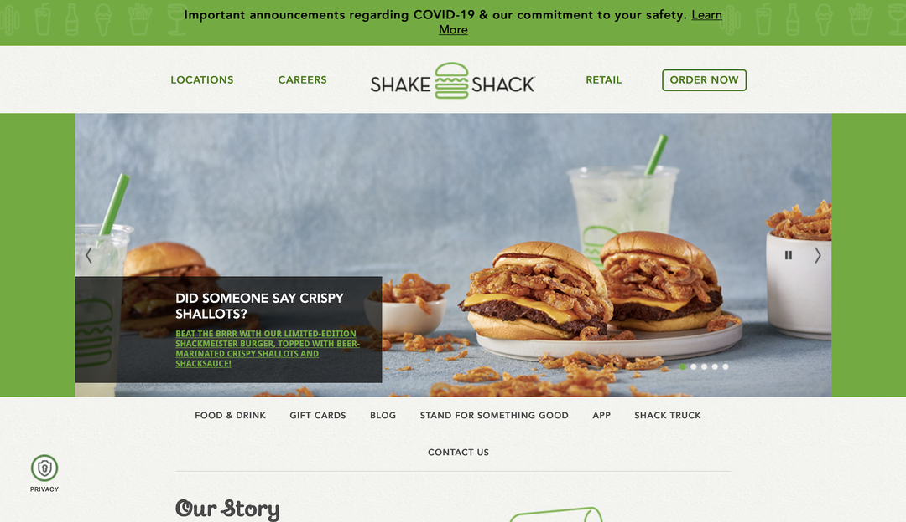
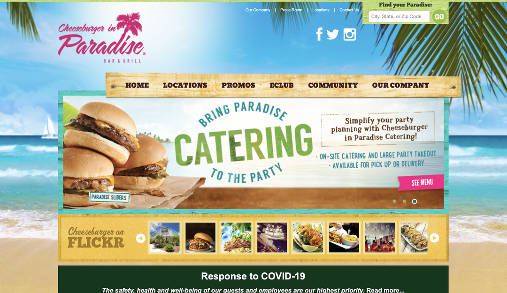
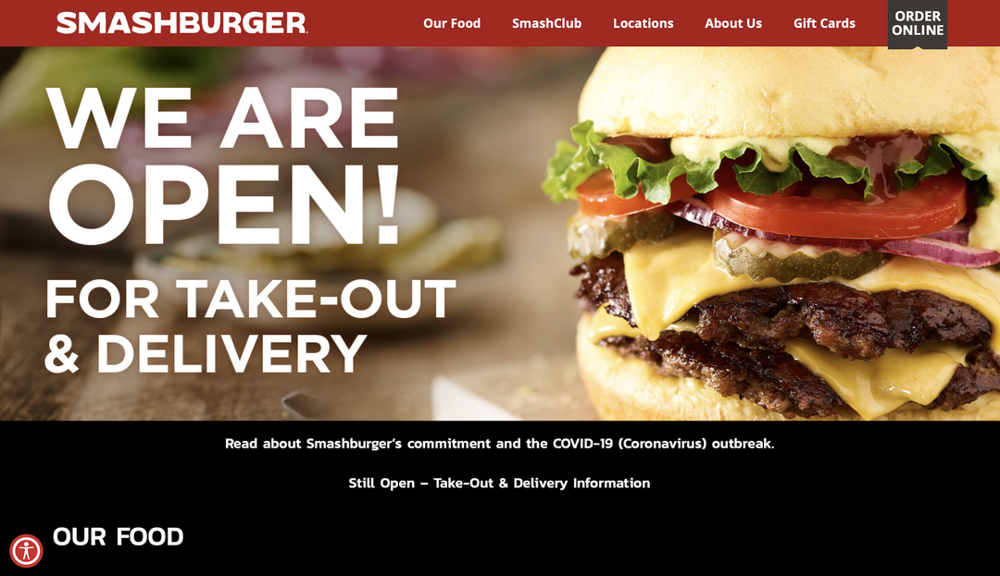
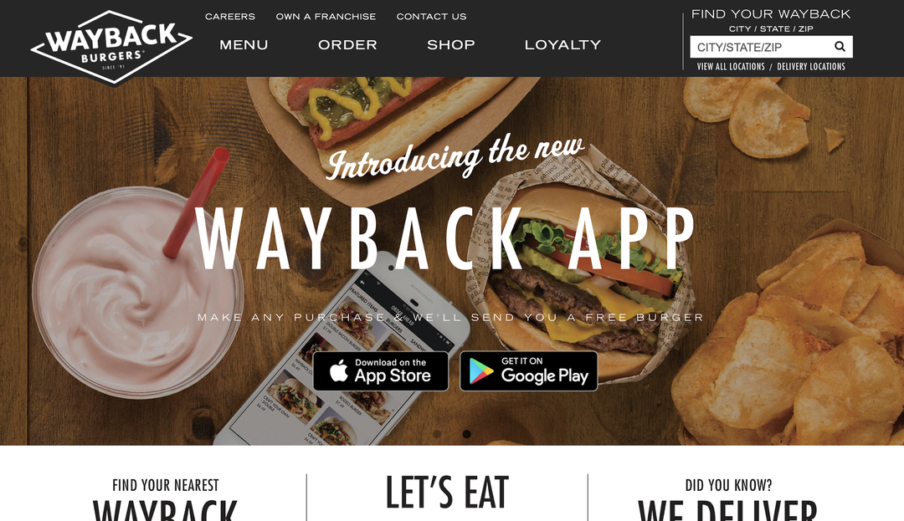

Restaurant Website Critiques

Fuddruckers' website has a video/slideshow of pictures on the main page of the site that automatically draw the customer in. In addition, the site has nice visual flow due to the use of the grid in its design as well as the fun transitions you see when you scroll down. Overall, the site is very easy to navigate. The only negative is you have to find a specific location in order to see the full menu.

Shake Shack’s website has a nice visual flow and the use of the greys, blacks, and greens are really easy on the eyes. I love the look of the website and the layout really helps the website flow. The website keeps with the contemporary, hip brand that Shake Shack has. The only complaint I have is the navigation under the photo slideshow on the main page gets a little lost because of how small the text is. Other than that, I think this website is very strong!

Cheeseburger in Paradise is a restaurant that has a strong visual identity. The color scheme is very complementary of the beach photo background of the site. The site is very easy to navigate and easy on the eyes. Like the Fuddruckers website, the only downside to the site is you have to find a specific location in order to see the full menu.

Smash Burger's website is very playful and utilizes a grid, a black background, and transitions! The black background really makes the clear, colorful pictures stand out to the user. The grid helps the website stay organized by keeping the content in two to three columns. When looking at the design of the site, the website is very successful in creating a brand that is not harsh on the eyes and will leave it's customers wanting more!

Wayback Burger's website is very sleek and simple in terms of design. The website's color scheme of greys and whites make the colorful, high-def photos of their food really stand out. The color scheme and contemperary feel of the website keeps in style with the brand. The site also includes real photos from customers to give an authenic feel and show that customers love Wayback Burgers!